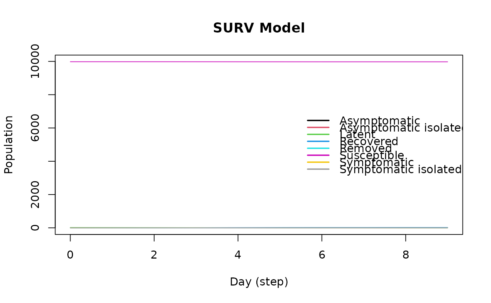

SURV model
Arguments
- name
String. Name of the virus.
- prevalence
Initial number of individuals with the virus.
- efficacy_vax
Double. Efficacy of the vaccine. (1 - P(acquire the disease)).
- latent_period
Double. Shape parameter of a 'Gamma(latent_period, 1)' distribution. This coincides with the expected number of latent days.
- infect_period
Double. Shape parameter of a 'Gamma(infected_period, 1)' distribution. This coincides with the expected number of infectious days.
- prob_symptoms
Double. Probability of generating symptoms.
- prop_vaccinated
Double. Probability of vaccination. Coincides with the initial prevalence of vaccinated individuals.
- prop_vax_redux_transm
Double. Factor by which the vaccine reduces transmissibility.
- prop_vax_redux_infect
Double. Factor by which the vaccine reduces the chances of becoming infected.
- surveillance_prob
Double. Probability of testing an agent.
- transmission_rate
Double. Raw transmission probability.
- prob_death
Double. Raw probability of death for symptomatic individuals.
- prob_noreinfect
Double. Probability of no re-infection.
- x
Object of class SURV.
- main
Title of the plot.
- ...
Currently ignore.
Value
The
ModelSURVfunction returns a model of class epiworld_model.
The plot function returns a plot of the SURV model of class
epiworld_model.
See also
epiworld-methods
Other Models:
ModelDiffNet(),
ModelSEIR(),
ModelSEIRCONN(),
ModelSEIRD(),
ModelSEIRDCONN(),
ModelSEIRMixing(),
ModelSIR(),
ModelSIRCONN(),
ModelSIRD(),
ModelSIRDCONN(),
ModelSIRLogit(),
ModelSIRMixing(),
ModelSIS(),
ModelSISD(),
epiworld-data
Examples
model_surv <- ModelSURV(
name = "COVID-19",
prevalence = 20,
efficacy_vax = 0.6,
latent_period = 4,
infect_period = 5,
prob_symptoms = 0.5,
prop_vaccinated = 0.7,
prop_vax_redux_transm = 0.8,
prop_vax_redux_infect = 0.95,
surveillance_prob = 0.1,
transmission_rate = 0.2,
prob_death = 0.001,
prob_noreinfect = 0.5
)
# Adding a small world population
agents_smallworld(
model_surv,
n = 10000,
k = 5,
d = FALSE,
p = .01
)
# Running and printing
run(model_surv, ndays = 100, seed = 1912)
#> _________________________________________________________________________
#> Running the model...
#> ||||||||||||||||||||||||||||||||||||||||||||||||||||||||||||||||||||||||| done.
#> done.
model_surv
#> ________________________________________________________________________________
#> Surveillance
#> It features 10000 agents, 1 virus(es), and 1 tool(s).
#> The model has 8 states.
#> The final distribution is: 9974 Susceptible, 0 Latent, 0 Symptomatic, 0 Symptomatic isolated, 0 Asymptomatic, 0 Asymptomatic isolated, 26 Recovered, and 0 Removed.
# Plotting
plot(model_surv, main = "SURV Model")
